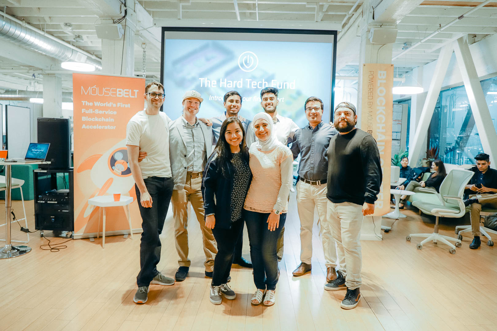

Who are we?
The Hard Tech Fund is a startup development program founded by Hyperloop at UC Davis, Space and Satellite Club, Blockchain at Davis, Bioinnovation Group at UC Davis, and Quantum Computing at UC Davis. All of these clubs have built or assisted in the construction of hardware that will help decrease emissions, reconstruct supply chains, and change the public perspective on environmental conservation. They wanted a dedicated space for their members and the UC Davis community to build hardware with this mission in mind. This 10 week program during the summer session will provide the time, funding, and workshops necessary to turn these projects into products for future licensing or as the basis of future businesess.
What is our program?
We run a program that takes a hardware project from ideation to minimum viable product (MVP).
Schedule
Spring Quarter (10 Weeks)
- Week 1
- Week 2
- Week 3
- Week 4
- Week 5
- Week 6
- Week 7
- Week 8
- Week 9
- Week 10
Summer Session (5 Weeks)
- Week 1
- Week 2
- Week 3
- Week 4
- Week 5
We are still looking for speakers for each of these weeks and attendees for demo day. If you would like to speak during our program or attend demo day, email kdesh@ucdavis.edu.
Partners and Sponsors
UC Davis VentureCatalyst UC Davis’ Venture Catalyst facilitates the translation of University research and technology by driving the development of new ventures.
Student Startup Center at UC Davis We are a team of entrepreneurs and engineers dedicated to making the world a better place, one startup at a time. We partner with industry giants like Intel and LinkedIn to bring ideas to life through hackathons and seed funding.
Surcle.io Surcle is an end-to-end online ecosystem designed to bring hardware products to life. Our network brings together engineers and innovators with projects from major corporations, startups, and institutions globally. The Surcle community thrives on the expertise and creativity of its members to solve hardware, engineering and manufacturing challenges.
Mousebelt University Mousebelt is building a community of universities from all over the world enabling students to collaborate, share ideas, and enhance their understanding of blockchain.
We are still looking for partners and sponsors who can provide us tools to build products or fiscal support. In exchange, we provide product reviews and social media exposure, amongst other incentives. Looking to partner with us? Email smsandeep@ucdavis.edu.
Team
Year-Round
- Samarth Sandeep President, Co-Founder
- Kirk McGregor Advisor
- Blake Anneberg Hyperloop Correspondent and Outreach
- Linda Huang Design Lead
Contact
Please email info@hardtechfund.com for inquiries.